Due: Monday, April 19, 2004.
- 1.
- Consider the linear programming problem (P)
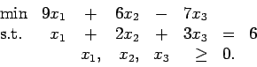
Assume the current point is e=(1,1,1)T.
Calculate the affine descent direction -PAc and the centering direction
PAe. We wish to move in the direction
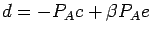
for some
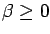.
Show that by choosing  appropriately, we can find
a steplength 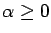
such that 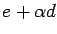
is optimal for
the linear program.
(Note: For this problem use the primal rescaling matrix X.
For the given point, we have X=I, the identity matrix.
The projection matrix
PA=I-AT(AAT)-1A.)
appropriately, we can find
a steplength 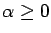
such that 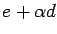
is optimal for
the linear program.
(Note: For this problem use the primal rescaling matrix X.
For the given point, we have X=I, the identity matrix.
The projection matrix
PA=I-AT(AAT)-1A.)
- 2.
- Assume the standard form linear programming problem
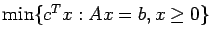
has a bounded set of optimal solutions.
Let x be a strictly feasible solution.
Let 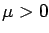.
Let s* solve the problem
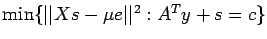.
Find s*. Show that if the optimal value is smaller than 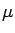
then s* > 0.
- 3.
- For the problem (P) in question 1, with the given primal point x=e,
find the choice of y*, s*, and 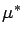
which minimizes
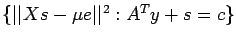.
Verify that the optimal value is smaller than .
- 4.
- Show that the standard dual form
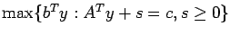
is equivalent to a problem of the form
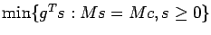
for some matrix M and
some vector g.
You may assume the rows of A are linearly independent.
- 5.
- Wright, Chapter 5, page 105, question 7.
- 6.
- Let X be a symmetric real n x n matrix.
Show that X is positive semidefinite if and only if
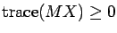
for all symmetric positive semidefinite
n x n real matrices M.
(Hint: M is a symmetric positive semidefinite matrix
if and only if it has a
Cholesky factorization M=LLT for a real lower triangular
matrix L.)
John E. Mitchell
2004-04-05